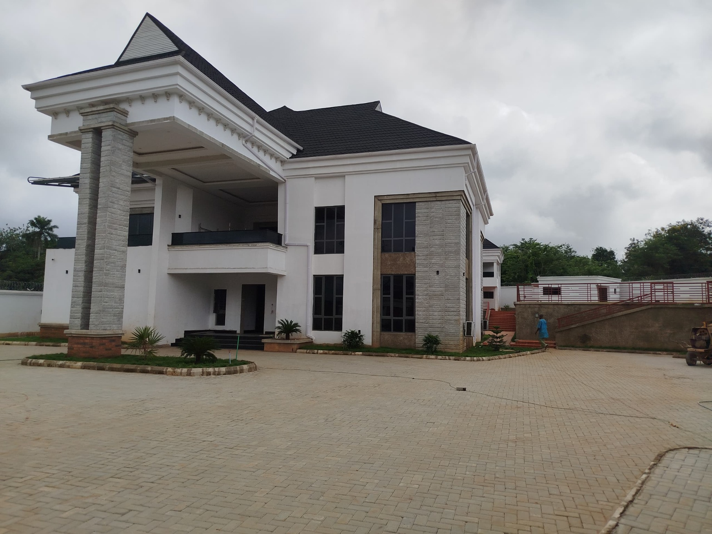
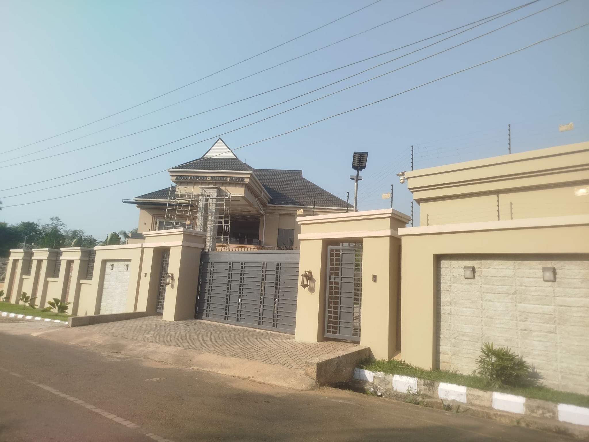
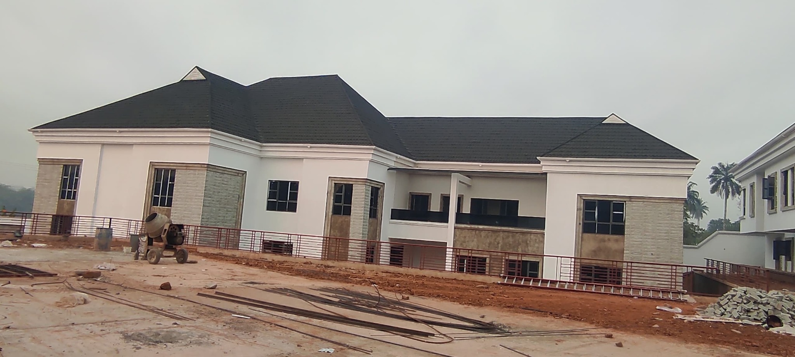

Country Home
End-to-end delivery of a substantial country residence at Oke-Opo, Ilesa—from structural construction and masonry through complex roofing, architectural finishes and external works.
Moving a complex residence from frame to finish.
The Country Home progressed through major structural work, blockwork, a complex roof form, internal and external finishes, boundary treatment and final external works. Its long delivery cycle required continuity: decisions made during the structural stage had to support the architectural details and finished appearance achieved later.
Site / Project Manager
I led day-to-day delivery, translated drawings into planned site activities, coordinated artisans and trades, managed material and labour requirements and monitored progress and workmanship. My responsibility continued across changing phases rather than ending with the structural shell.
Key workstreams.
Managing the transition from structure to architecture.
I maintained alignment between structural and architectural information, especially through the roofing and finishing stages. Levels, openings, roof geometry, façade features and service interfaces were considered early enough to avoid compromising later work.
Preparing every phase for the next.
As the project moved from heavy construction to finishes, labour, specialist trades and materials had to be reorganised around new priorities. I sequenced work so completed activities created a reliable base for roofing, finishing and external development.
Maintaining finish quality across a long delivery cycle.
Workmanship was checked progressively, with attention to line, level, symmetry, material interfaces and protection of completed surfaces. The final exterior reflects consistent control from the underlying structure through visible finishes.
Site documentation.





End-to-end residential delivery depends on maintaining technical control and coordination as the nature of the work changes from structure to finish.